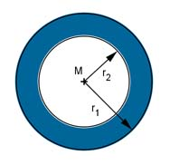

Aufgabe 25 Innendurchmesser d2 = 4,2 dm ; Fläche A = 2,7632 dm2. Wie groß ist r1 in cm?  d2 4,2 dm r2 = ---- = -------- = 2,1 dm 2 2 A = π * (r12 - r22) |:π A --- = r12 - r22 |+r22 π A --- + r22 = r12 π r1 = 2,1dm2+2,7632dm23,14 = 2,3 cm
Aufgabe 25 Innendurchmesser d2 = 4,2 dm ; Fläche A = 2,7632 dm2. Wie groß ist r1 in cm?
